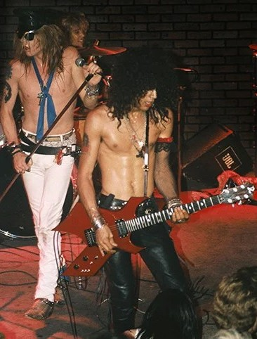
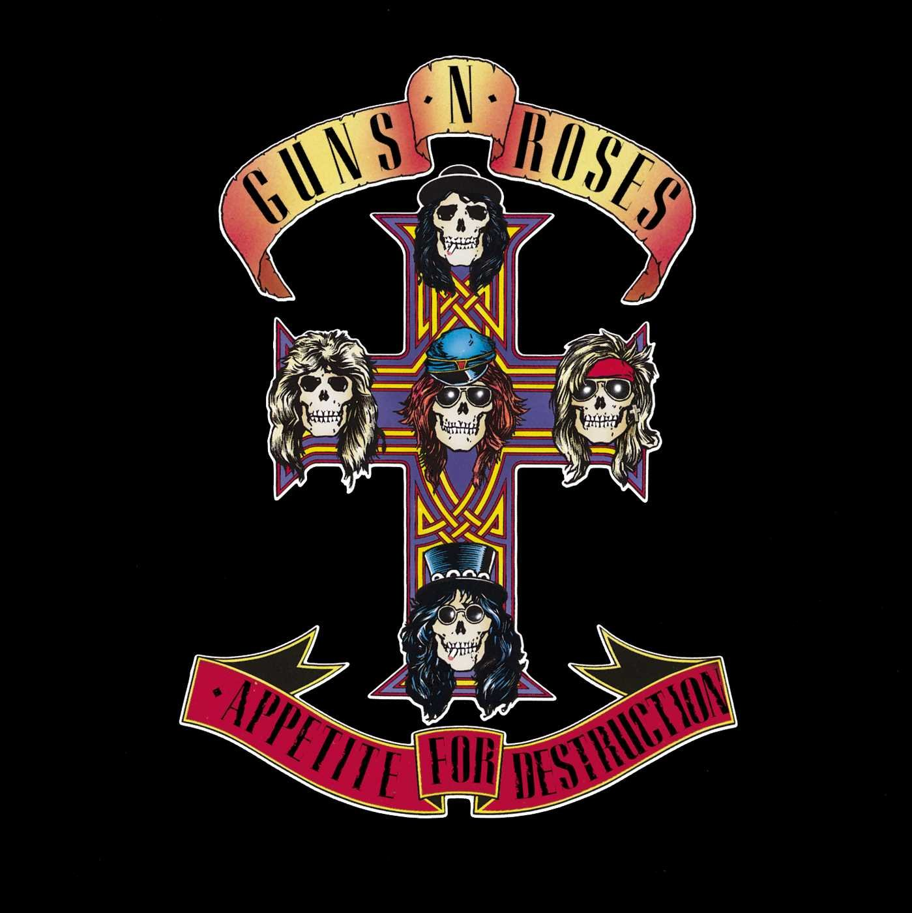
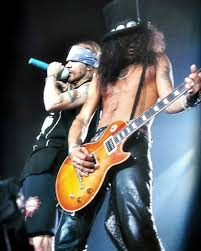
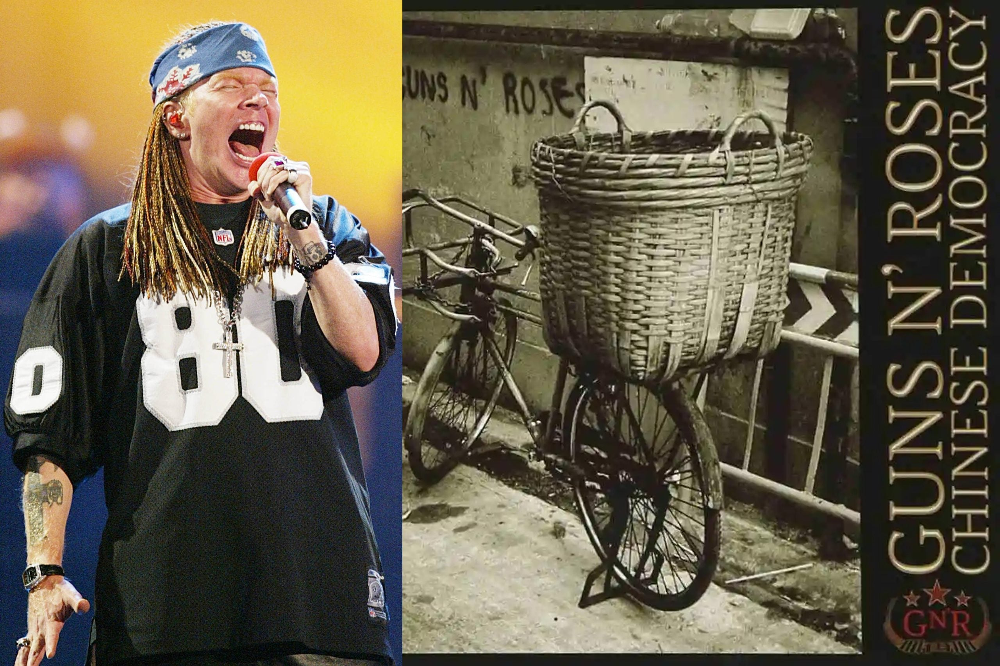
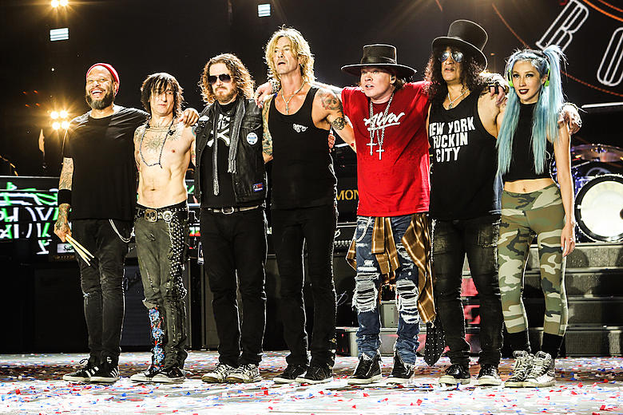

Guns n' Roses começou em 1985
foi a junção de duas outras bandas a Hollywood Rose e a L.A Guns

Guns n' Roses lança seu álbum de estréia em 1987
chamado de appetite for Destruction que resumiu bem o que era a banda naquele momento
esse álbum detém o recorde de álbum de estreia mais vendido da história do rock
cheio de clássicos e hits como "Sweet Child O' Mine", "Welcome to the Jungle", "Paradise City",
"It's So Easy", "Mr.Brownstone", "My Michelle", "Night Train" e a polêmica e quente "Rocket Queen"

Em 1991 Guns n' Roses lança o álbum duplo que parou o mundo Use Your Illusion I & II
Esse dois álbuns ficaram famosos por ter vários clássicos da banda como "November Rain", "Don't Cry", "You Could Be Mine",
"Estranged", "Civil War", e os covers "Live and Let Die" dos Beatles e "Knockin' on Heavens's Door" do Bob Dylan

Em 2008 Guns n' Roses lança o álbum Chinese Democracy
após se separarem em 1993, Axl Rose (Vocalista) ficou sozinho, cheio de problemas e dificuldades superou, e lançou
o álbum mais caro e mais demorado pra ficar pronto, foram 14 anos e 13 Milhões de Doláres
No começo rejeitado mas hoje um clássico tambem com músicas como "Chinese Democracy", "Shackler's Revenge", "Better"
"Street of Dreams", "There Was a Time", "Catcher in the Rye", "Scraped", "Sorry", "I.R.S", "Madagascar", "This I Love", "Prostitute"
Um álbum cheio de emoção, sentimento e desabafo, um álbum mais íntimo e profundo

Em 2016 para o bem de todos os fãs o Guns n' Roses se reuniram novamente
E continuam até hoje lotando estádios pelo mundo, conquistando cada vez mais fãs,
Hoje Eles se preparam para lançar um próximo álbum, mas já lancaram alguns Singles como:
"Absurd", "Hard Skool", "The General", "Perhaps", "Atlas" e "Nothin' "